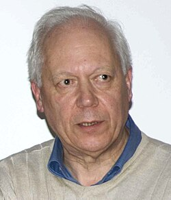

Enrico Bombieri | |
|---|---|
 | |
| Born | 26 November 1940 Milan, Italy |
| Alma mater | University of Milan Trinity College, Cambridge |
| Known for | Determinant method Large sieve method in analytic number theory Bombieri-Lang conjecture Bombieri norm Bombieri–Vinogradov theorem "Heights" in Diophantine geometry Siegel's lemma for bases (Bombieri–Vaaler) Partial differential equations |
| Awards | 1966, Caccioppoli Prize[1] 1974, Fields Medal 1976, Feltrinelli Prize 1980, Balzan Prize 2006, Pythagoras Prize[2] 2008, Joseph L. Doob Prize[3][4] 2010, King Faisal International Prize 2020, Crafoord Prize |
| Scientific career | |
| Fields | Mathematics |
| Institutions | Institute for Advanced Study |
| Giovanni Ricci | |
Doctoral students | Umberto Zannier |
{kind=link}
Enrico Bombieri (born 26 November 1940) is an Italian mathematician, known for his work in analytic number theory, Diophantine geometry, complex analysis, and group theory.[5] Bombieri is currently professor emeritus in the School of Mathematics at the Institute for Advanced Study in Princeton, New Jersey.[6] Bombieri won the Fields Medal in 1974[5] for his work on the large sieve and its application to the distribution of prime numbers.[7]
Career
Bombieri published his first mathematical paper in 1957, when he was 16 years old. In 1963, at age 22, he earned his first degree (Laurea) in mathematics from the Università degli Studi di Milano under the supervision of Giovanni Ricci[8] and then studied at Trinity College, Cambridge, with Harold Davenport.[9]
Bombieri was an assistant professor (1963–1965) and then a full professor (1965–1966) at the Università di Cagliari, at the Università di Pisa in 1966–1974, and then at the Scuola Normale Superiore di Pisa in 1974–1977. From Pisa, he emigrated in 1977 to the United States, where he became a professor at the School of Mathematics at the Institute for Advanced Study in Princeton, New Jersey. In 2011, he became professor emeritus.[9]
Bombieri is also known for his pro bono service on behalf of the mathematics profession, e.g. for serving on external review boards and for peer-reviewing extraordinarily complicated manuscripts (like the paper of Per Enflo on the invariant subspace problem).[10]
Research
The Bombieri–Vinogradov theorem is one of the major applications of the large sieve method. It improves Dirichlet's theorem on prime numbers in arithmetic progressions, by showing that by averaging over the modulus over a range, the mean error is much less than can be proved in a given case. This result can sometimes substitute for the still-unproved generalized Riemann hypothesis.
In 1969, Bombieri, De Giorgi, and Giusti solved Bernstein's problem on minimal surfaces in dimensions above eight.[11]
In 1976, Bombieri developed the technique known as the "asymptotic sieve".[12] In 1980, he supplied the completion of the proof of the uniqueness of finite groups of Ree type in characteristic 3; at the time of its publication, it was one of the missing steps in the classification of finite simple groups.[13]
Awards
Bombieri's research in number theory, algebraic geometry, and mathematical analysis has earned him many international prizes — a Fields Medal in 1974 and the Balzan Prize in 1980. He was a plenary speaker at the International Congress of Mathematicians, which took place in 1974 in Vancouver. He is a member, or foreign member, of several learned academies, including the Accademia Nazionale dei Lincei (elected 1976), the French Academy of Sciences (elected 1984), the Academia Europaea (elected 1995),[14] and the United States National Academy of Sciences (elected 1996).[15] In 2002 he was made Cavaliere di Gran Croce al Merito della Repubblica Italiana.[16] In 2010, he received the King Faisal International Prize (jointly with Terence Tao).[17][18] and in 2020 he was awarded the Crafoord Prize in Mathematics.[19]
Other interests
Bombieri, accomplished also in the arts, explored for wild orchids and other plants as a hobby in the Alps when a young man.[20]
With his powder-blue shirt open at the neck, khaki pants and running shoes, he might pass for an Italian film director at Cannes. Married with a grown daughter, he is a gourmet cook and a serious painter: He carries his paints and brushes with him whenever he travels. Still, mathematics never seems far from his mind. In a recent painting, Bombieri, a one-time member of the Cambridge University chess team, depicts a giant chessboard by a lake. He's placed the pieces to reflect a critical point in the historic match in which IBM's chess-playing computers, Deep Blue, beat Garry Kasparov.[21]
Selected publications
Sole
- E. Bombieri, Le Grand Crible dans la Théorie Analytique des Nombres (Seconde Édition). Astérisque 18, Paris 1987.
Joint
- Bombieri, E.; Vaaler, J. (February 1983). "On Siegel's lemma". Inventiones Mathematicae. 73 (1): 11–32. Bibcode:1983InMat..73...11B. doi:10.1007/BF01393823. S2CID 121274024.
- Bombieri, E.; Mueller, J. (1983). "On effective measures of irrationality for and related numbers". Journal für die reine und angewandte Mathematik. 342: 173–196.
- B. Beauzamy, E. Bombieri, P. Enflo and H. L. Montgomery. "Product of polynomials in many variables", Journal of Number Theory, pages 219–245, 1990.
See also
- Bombieri norm
- Bombieri–Vinogradov theorem
- Glossary of arithmetic and Diophantine geometry – Bombieri–Lang conjecture
References
- ^ "Site of Caccioppoli Prize". Archived from the original on 14 May 2019. Retrieved 31 December 2011.
- ^ Premio Pitagora 2006 (in Italian)
- ^ "Joseph L. Doob Prize".
- ^ "2008 Doob Prize" (PDF). Notices of the AMS. 55 (4): 503–504. April 2008.
- ^ a b "Fields medals 1974". International Mathematical Union (IMU). Retrieved 8 September 2024.
- ^ "Enrico Bombieri". Institute for Advanced Study. Retrieved 7 August 2019.
- ^ "Enrico Bombieri PROFESSOR EMERITUS School of Mathematics Number Theory". www.ias.edu (Institute for Advanced Study). 9 December 2019. Retrieved 2 July 2021.
- ^ Bartocci, Claudio; Betti, Renato; Guerraggio, Angelo; Lucchetti, Roberto (28 September 2014). Mathematical Lives. Springer. pp. 213–215. ISBN 978-3-642-44755-6.
- ^ a b "Professor Enrico Bombieri – King Faisal Prize". Retrieved 30 October 2024.
- ^ Enflo, Per (1987). "On the invariant subspace problem for Banach spaces". Acta Mathematica. 158: 213–313. doi:10.1007/BF02392260. ISSN 0001-5962.
- ^ Bombieri, Enrico; De Giorgi, Ennio; Giusti, Enrico (1969), "Minimal cones and the Bernstein problem", Inventiones Mathematicae, 7 (3): 243–268, Bibcode:1969InMat...7..243B, doi:10.1007/BF01404309, ISSN 0020-9910, MR 0250205, S2CID 59816096
- ^ E. Bombieri, "The asymptotic sieve", Mem. Acad. Naz. dei XL, 1/2 (1976) 243–269.
- ^ Bombieri, E. (1980). "Thompson's problem σ2=3. Appendices by A. Odlyzko and D. Hunt". Invent. Math. 58 (1): 77–100. doi:10.1007/bf01402275. S2CID 122867511. (This paper completed a line of research initiated by the Walter theorem.)
- ^ "Enrico Bombieri". Member. Academia Europaea. Retrieved 17 November 2024.
- ^ Scheda socio Archived 2012-11-14 at the Wayback Machine, from the website of Accademia dei Lincei (elected 1976)
- ^ Torno Armando (28 May 2002). "BOMBIERI Il re dei numeri che ha conquistato il mondo". Corriere della Sera (in Italian). p. 35.
- ^ King Faisal Foundation, – retrieved 2010-01-11.
- ^ "Bombieri and Tao Receive King Faisal Prize" (PDF). Notices of the AMS. 57 (5): 642–643. May 2010.
- ^ "The Crafoord Prizes in Mathematics and Astronomy 2020". Crafoord Prize. 29 January 2020. Retrieved 30 October 2024.
- ^ Bombieri – Mathematician retrieved 10 February 2020
- ^ Birch, Douglas (30 September 1998). "Lifelong pursuit of mathematical pursuit Professor: At 15, Enrico Bombieri picked up a book on number theory that introduced him to the fiendishly puzzling Riemann Hypothesis. He was hooked". The Baltimore Sun. Archived from the original on 29 October 2015. Retrieved 12 October 2015.
Sources
- Bombieri, E.; Mueller, J. (1983). "On effective measures of irrationality for and related numbers". Journal für die Reine und Angewandte Mathematik. 342: 173–196.
- Bombieri, E.; Vaaler, J. (February 1983). "On Siegel's lemma". Inventiones Mathematicae. 73 (1): 11–32. Bibcode:1983InMat..73...11B. doi:10.1007/BF01393823. S2CID 121274024.
- E. Bombieri, Le Grand Crible dans la Théorie Analytique des Nombres (Seconde Édition). Astérisque 18, Paris 1987.
- B. Beauzamy, E. Bombieri, P. Enflo and H. L. Montgomery. "Product of polynomials in many variables", Journal of Number Theory, pages 219–245, 1990.
- Enrico Bombieri and Walter Gubler (2006). Heights in Diophantine Geometry. Cambridge U. P.
- "Enrico Bombieri Italian mathematician". www.britannica.com (Encyclopedia Britannica). Retrieved 2 July 2021.
External links
 Media related to Enrico Bombieri at Wikimedia Commons
Media related to Enrico Bombieri at Wikimedia Commons
- Enrico Bombieri at the Mathematics Genealogy Project
- O'Connor, John J.; Robertson, Edmund F., "Enrico Bombieri", MacTutor History of Mathematics Archive, University of St Andrews
- Enrico Bombieri, Institute for Advanced Study
- Lista delle pubblicazioni di Enrico Bombieri, University of Pisa Archived 13 November 2013 at the Wayback Machine